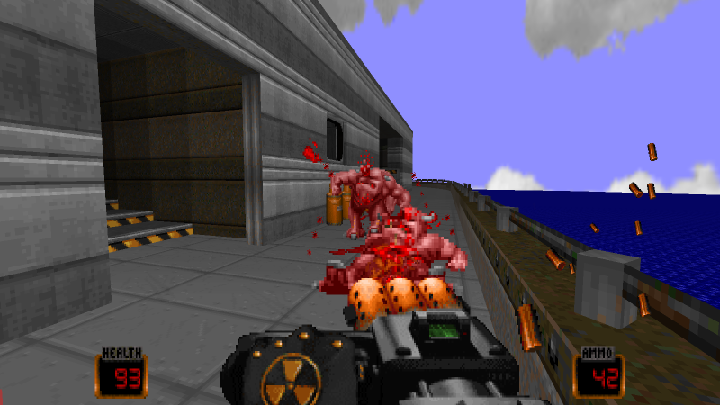
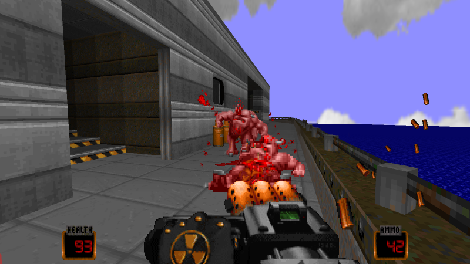

Notable features
- Uncapped framerate
- Updated renderer with Direct3D11, GLES3, and GL 3.3 paths in addition to the legacy GL 1.3 renderer
- UDMF map support
- Support for community Dehacked/mapping standards up to and including MBF21
- Improved compatibility with Boom behavior and rendering (physics, height sectors, etc)
- DEHEXTRA compatibility
- DSDHacked compatibility
- UMAPINFO compatibility
- Compressed container support (.EPK, .ZIP)
- A soundfont-capable MIDI player (.sf2 and .sf3 support)
- OPL emulation with support for external OP2/AIL/TMB/WOPL instrument banks
- Many more music and sound formats (PC Speaker, FLAC, IMF, MP3, OGG, IT/S3M/XM/MOD/FT tracker modules)
- Quake MD1, MD2 and MD3 model support
- TrueType font support (TTF and OTF)
- Support for image/spritesheet fonts
- Erraticism (aka SuperHot) gameplay mode: Time will only advance when the player moves or fires
- Improved support for gamepads
- Lua as the primary scripting language, with COAL compatibility libraries for porting
- Expanded DDF, RTS, and COAL features
- Widescreen statusbar, intermission, and title screens
- AJBSP as the internal nodebuilder
- Inventory system
- Autoload folder
- New Liquid animation (SMMU and Parallax)
- Optional Dynamic Sound Reverb
- Optional Pistol Start feature
Bugfixes and detailed changes can be found in CHANGELOG.txt
Currently Supported Platforms
- Windows 32/64-bit (x86 architecture), Windows 7 or later
- Web Browsers supporting WebGL2
- Linux 32/64-bit (x86 and ARM architecture - ARM tested with Raspberry Pi OS on a Pi 4B)
- BSD 32/64-bit (x86 and ARM64 architecture - tested with FreeBSD 13.1; ARM64 tested on a Pi 4B but not recommended unless proper video acceleration is available
as playable framerates are too difficult to achieve otherwise)
- Mac 64-bit (x86 and M1 architecture)
Currently Supported IWADs
- The Ultimate Doom/Doom 1/Freedoom Phase 1
- Doom 2/Freedoom Phase 2
- Chex Quest 1
- Chex Quest 3: Vanilla (Regular and Modding Edition)
- Heretic/Blasphemer
- HacX 1.2
- Harmony (Original and Compatible Releases)
- REKKR
|


 
